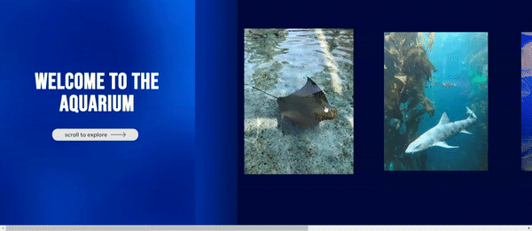
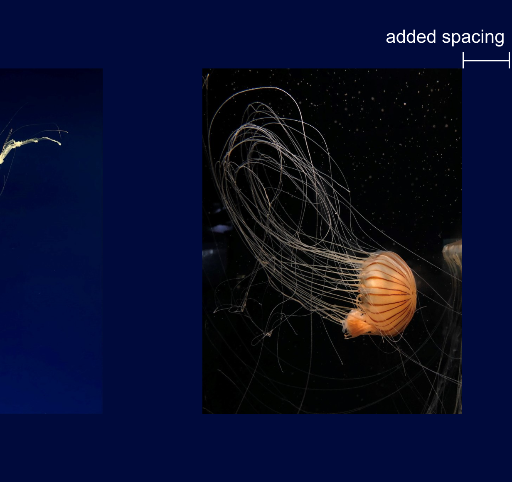

Nikita and Sky had taken a look at my Every Picture project for the final. They are both teaching assistants for the Interactive Media II course, and have experience with visual and UX/UI design. The strong points noted were good visuals of the information overlays after the user clicks on the images, and the structure of information. Nikita suggested adding more space at the right edge so the photo is not against the screen, and also noted perhaps adding animation on the second page since it seems too static currently. Sky also added that the first page should have an animation that transitions into the second page.
Randy Change also gave me feedback on my visual design. They were the Design Director for Picnic Day last year, and is continuing his role this year. He was also a part of the Marketing team for the InPrint zine last year. He pointed out the color scheme helps indicate that it is an aquarium, and the use of gradients from light to dark helps immerse the user. There is also a good selection of photos. As for the animation, the bobbing animation helps add to the aquarium atmosphere. Some things they want to see is a softer animation for the overlay. The current animation is harsh and disruptive, taking away from the theme. Also, like what other have stated, they would like to see spacing at the end of the photo.
